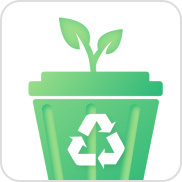

복잡하고 어려운 분리수거
간단하게 해볼까?
모두를 위한 분리수거 어플
-
type
team project (1석4조)
-
date
2023.05
-
tool
-
- lim juhee
- choi geon
- oh daeun
- jung bomi
team project (1석4조)
2023.05

무수히 많은 분리수거 쓰레기들로 인하여 매번 고민에 빠지는 사람들을 위하여 기존에 있던
‘내 손안의 분리배출’ 어플을 빠르고 간편하게 정보를 제공하기 위하여 앱 리디자인을 기획했다.
환경부와 한국환경공단 등에서 올바른 분리배출 방법을 알려주기 위해 제작한 어플
로그인이 따로 필요없어 누구나 사용 가능
분리수거에 대한 방대한 정보를 제공

많은 정보를 효과적으로 전달하기 위한 디자인 키워드 선별
keyword1
keyword2
keyword3
자연을 상징하는 그린, 깨끗함을 상징하는 화이트를 메인 컬러로 잡고 무채색 컬러를 활용하여
깔끔한 느낌을 주고자 하였습니다.
심플한 느낌의 쓰레기통 아이콘과 자연적인 느낌의 새싹 아이콘을 융합하여 친환경적인 느낌을 살렸습니다.
light ver.
dark ver.